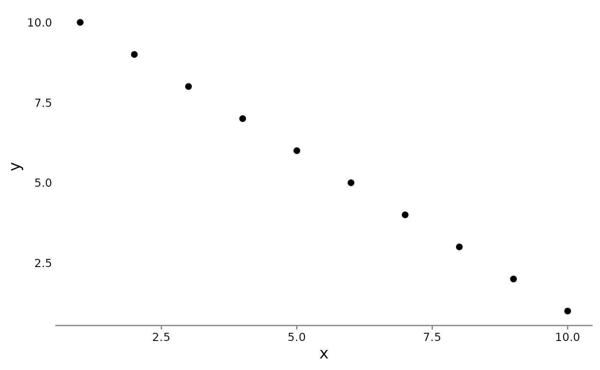

theme_fire
theme_fire.RdUse Fire Centre-preferred ggplot2 theme. Default sizing tends to work well for Quarto publications.
Usage
theme_fire(
axis.title = 14,
axis.text = 10,
strip.text = 10.5,
legend.text = 10.25,
strip.bg = "white",
plot.bg = "white",
line.col = "#838383"
)Examples
tibble::tibble(x = 1:10,
y = 10:1) |>
ggplot2::ggplot(ggplot2::aes(x = x, y = y)) +
ggplot2::geom_point() +
theme_fire()
